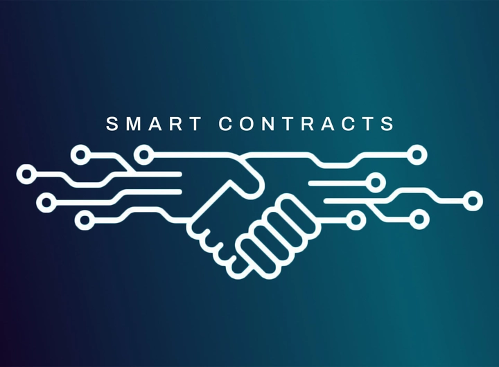
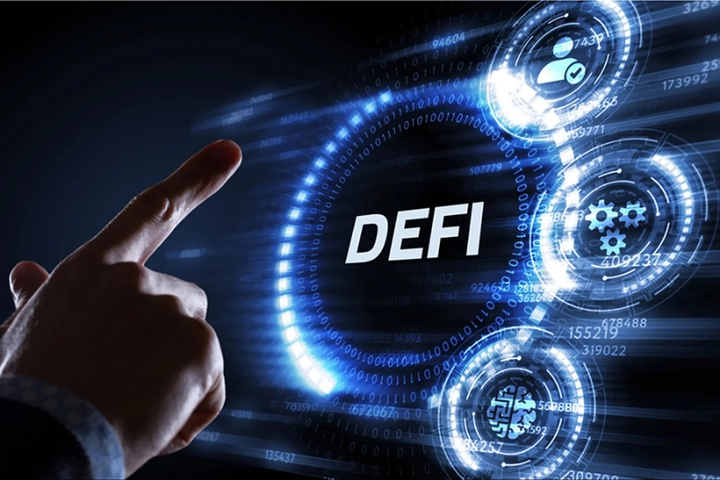
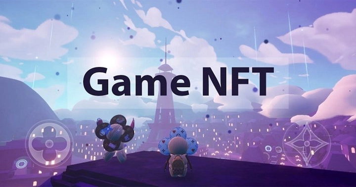

Smart Contract: Bước tiến công nghệ của Blockchain hay trò lừa đảo?
1. Từ vụ án của Shark Bình và dự án AntEx
Trong vài năm gần đây, làn sóng blockchain và tiền số tại Việt Nam phát triển mạnh mẽ với vô số dự án được giới thiệu hoành tráng, mang khẩu hiệu “ứng dụng công nghệ 4.0”, “DeFi thế hệ mới” hay “Make in Vietnam”. Một trong số đó là dự án đang rầm rộ thời gian gần đây liên quan tới một nhân vật nổi tiếng ngồi ghế nóng trong chương trình truyền hình "Shark Tank VietNam". Đó là dự án AntEx, do Nguyễn Hòa Bình (Shark Bình – Chủ tịch Tập đoàn NextTech) liên quan, từng được quảng bá rầm rộ là “hệ sinh thái tài chính phi tập trung toàn diện đầu tiên của Việt Nam”, bao gồm sàn giao dịch, ví điện tử, stablecoin neo theo VND và token riêng mang mã ANTEX.
Trong giai đoạn 2021–2022, dự án thu hút hàng chục nghìn nhà đầu tư với những lời hứa hẹn “đưa công nghệ Việt vươn tầm thế giới”, “cơ hội nhân tài sản cùng blockchain thế hệ mới”. Theo VNExpress và Dân Trí, chỉ trong thời gian ngắn, AntEx đã huy động được khoảng 4,5 triệu USD từ hơn 30.000 nhà đầu tư, phát hành trên 33 tỷ token ANTEX. Tuy nhiên, sau những lời quảng bá đầy hào nhoáng, token ANTEX sụt giá tới 99%, còn các sản phẩm trong “hệ sinh thái” gần như không hoạt động đúng lộ trình đã công bố.
Đỉnh điểm, đầu năm 2025, Cơ quan Cảnh sát Điều tra đã khởi tố và bắt tạm giam Shark Bình cùng một số đồng phạm về các tội danh “Lừa đảo chiếm đoạt tài sản” và “Vi phạm quy định về kế toán gây hậu quả nghiêm trọng” (nguồn: Báo Người Lao Động Online). Vụ việc gây chấn động giới công nghệ và tài chính, đồng thời làm sụp đổ niềm tin của cộng đồng đầu tư tiền số trong nước, vốn đang ở giai đoạn thử nghiệm non trẻ.
Hàng nghìn nhà đầu tư cho rằng mình bị “lùa gà” – một thuật ngữ phổ biến trong giới tiền ảo, ám chỉ việc dụ người tham gia đầu tư, đẩy giá token, rồi rút thanh khoản (rug pull) khiến giá sụp đổ, còn người chơi chịu thiệt hại.
Vụ AntEx không là ví dụ điển hình về cách công nghệ tiên tiến như blockchain hay smart contract bị lợi dụng để hợp thức hoá mô hình lừa đảo.
Các thuật ngữ như DeFi, NFT, smart contract từng được coi là biểu tượng của đổi mới, nhưng trong tay những kẻ thiếu đạo đức và vì lợi nhuận, chúng trở thành lớp vỏ công nghệ che đậy mưu đồ chiếm đoạt tài sản khiến cho người dùng trên toàn thế giới phải đặt ra dấu chấm hỏi lớn nghi ngờ về tính ứng dụng thực tiễn của Smart Contract.
Một câu hỏi được đặt ra cho cả cộng đồng công nghệ và nhà đầu tư:
Smart contract – liệu có thực sự là bước tiến vĩ đại của blockchain, hay chỉ là công cụ mới cho những trò lừa đảo tinh vi hơn?
Để trả lời, cần nhìn lại bản chất thực sự của smart contract.
2. Smart contract là gì?
Để hiểu vì sao smart contract được xem là “cuộc cách mạng trong niềm tin số”, cần quay lại thời điểm năm 2009, khi Bitcoin ra đời. Bitcoin được thiết kế như một hệ thống tiền tệ phi tập trung (decentralized currency), cho phép người dùng chuyển tiền trực tiếp cho nhau mà không cần ngân hàng hay bên trung gian.
Tuy nhiên, blockchain của Bitcoin chỉ có một chức năng duy nhất: ghi nhận giao dịch – tức là “A gửi cho B 1 Bitcoin”. Nó giống như một sổ cái toàn cầu, an toàn, công khai. Nhưng blockchain thế hệ đầu chỉ dừng lại ở vai trò “lưu trữ dữ liệu” chứ chưa thể “thực thi hành động”.
Mãi đến năm 2015, khi Ethereum được giới thiệu bởi Vitalik Buterin, blockchain mới bước sang một kỷ nguyên hoàn toàn mới. Ethereum không chỉ ghi lại giao dịch, mà còn cho phép lưu trữ và chạy các đoạn mã lập trình (code) trực tiếp trên blockchain. Những đoạn mã đó được gọi là “Smart Contract” – tức hợp đồng thông minh.

Smart contract – Hợp đồng tự vận hành bằng code
Về bản chất, smart contract là một chương trình máy tính được viết bằng ngôn ngữ như Solidity, triển khai (deploy) lên blockchain và tự động thực thi khi các điều kiện được thỏa mãn.
Ví dụ:
- Khi người chơi nạp 1 ETH vào ví, hệ thống sẽ tự động gửi lại 100 token.
- Khi người dùng đặt cược vào trận bóng tối nay và nếu dự đoán đúng họ được thưởng 180 token, nếu sai bị trừ 100 token.
- Mỗi ngày sẽ tặng ngẫu nhiên cho mỗi người chơi từ 1 đến 10 token, số token được chuyển từ tài khoản của nhà phát hành
- v...v...
Tất cả những điều khoản đều được ghi vào Smart Contract và lưu trữ lên blockchain và chúng sẽ thực thi tự động mà không ai có quyền thay thế hoặc can thiệp được.
Không cần người trung gian, không cần công ty đứng giữa, mọi quy trình đều được mã hóa bằng logic và lưu trữ minh bạch trên blockchain. Điều đó giúp loại bỏ rủi ro gian lận, sai sót, và tạo nên một niềm tin kỹ thuật số tuyệt đối – nơi “code is law” (mã chính là luật).
Nhờ smart contract, hàng loạt ứng dụng mới ra đời: DeFi (tài chính phi tập trung), NFT (tài sản số độc nhất), GameFi (game blockchain), và thậm chí cả DAO (tổ chức tự trị phi tập trung). Mỗi hợp đồng thông minh giống như một viên gạch nhỏ trong hệ sinh thái blockchain rộng lớn, nơi mọi giao dịch, quyền lợi, và điều kiện đều được định nghĩa bằng code – minh bạch, tự động và công khai.
Tuy nhiên, vấn đề không nằm ở bản thân smart contract – bởi nó được công khai minh bạch và được giám sát, kiểm định và phát triển bởi hàng triệu lập trình viên trên toàn thế giới.
Điều đáng nói là con người có thể lợi dụng “vỏ bọc công nghệ” để tạo niềm tin giả tạo. Trong nhiều dự án, kẻ đứng sau sử dụng danh tiếng đã có để vẽ ra một ý tưởng công nghệ vĩ mô với những lời quảng cáo có cánh, những cam kết chắc nịch. Sau đó họ phát hành token, tự tạo thanh khoản, thổi giá và kêu gọi nhà đầu tư “đồng hành cùng công nghệ tương lai”. Khi lượng vốn đủ lớn, họ lặng lẽ rút tiền, khiến giá token sụp đổ – chiêu trò này được gọi là “rug pull”, hay dân gian gọi là “lùa gà”. Giống như dự án Antex đã đề cập trước đó.
Nói cách khác, công nghệ không lừa người – con người mới là kẻ lợi dụng công nghệ để lừa người khác.
3. Những ứng dụng thực tiễn của Smart Contract
Smart contract không phải là công nghệ viễn vông, thực tế cho thấy nó có rất nhiều ứng dụng thực tiễn, đã và đang được triển khai mang lại nhiều lợi ích cho cộng đồng. Hãy cùng TrithucWorld điểm qua những ứng dụng của Smart Contract:
1. DeFi – tài chính phi tập trung
Ứng dụng đầu tiên và phổ biến nhất của smart contract là trong lĩnh vực DeFi (Decentralized Finance) – tài chính phi tập trung.
Ở đây, mọi hoạt động như giao dịch, vay – cho vay, gửi tiết kiệm, hay thậm chí phát hành stablecoin đều được thực hiện hoàn toàn bằng mã lệnh. Các sàn phi tập trung như Uniswap hay PancakeSwap sử dụng một công thức toán học đơn giản x·y = k để điều khiển giá token, thay cho vai trò của nhà tạo lập thị trường. Người dùng gửi hai loại token vào một “bể thanh khoản”, và mỗi khi có ai đó mua – bán, smart contract sẽ tự tính toán lại tỷ lệ giá mới.
Tương tự, các nền tảng như Aave hay Compound cho phép người dùng gửi tài sản vào làm thế chấp, rồi tự động cho người khác vay theo tỷ lệ an toàn được xác định bởi hợp đồng. Nếu giá trị tài sản thế chấp giảm xuống dưới ngưỡng an toàn, hợp đồng sẽ tự thanh lý, không cần bất kỳ can thiệp nào từ con người.
Tất cả diễn ra công khai, minh bạch, 24/7, không giới hạn biên giới – đây chính là điểm khiến DeFi trở thành “phòng thí nghiệm tài chính mở” của thế giới.

2. Token và NFT – chuẩn hóa tài sản số
Nhờ smart contract, khái niệm token ra đời – tức các đơn vị giá trị được phát hành trên blockchain. Chuẩn phổ biến nhất là ERC-20, cho phép tạo token đại diện cho tiền tệ, điểm thưởng, hoặc cổ phần dự án.
Còn đối với tài sản không thể thay thế (NFT – Non-Fungible Token), chuẩn ERC-721 và ERC-1155 giúp mã hóa quyền sở hữu tác phẩm nghệ thuật, vé sự kiện, vật phẩm trong game… Mỗi NFT là duy nhất, có thể truy xuất lịch sử và xác minh nguồn gốc trực tiếp trên blockchain.
Kỹ thuật đằng sau NFT bao gồm metadata (thông tin mô tả tác phẩm), thường được lưu trữ ngoài chuỗi qua IPFS, còn trên blockchain chỉ lưu lại địa chỉ băm (hash) để đảm bảo không thể chỉnh sửa.
Nhờ đó, smart contract đã biến quyền sở hữu kỹ thuật số – vốn mơ hồ trước đây – trở thành thứ có thể chứng minh và giao dịch được.
3. DAO – tổ chức tự trị phi tập trung
Một bước tiến khác của smart contract là hình thành các DAO (Decentralized Autonomous Organizations) – tổ chức hoạt động không cần giám đốc hay ban điều hành.
Tất cả quyết định trong DAO đều được bỏ phiếu bằng token và thực thi qua hợp đồng thông minh. Ví dụ, nếu cộng đồng thông qua đề xuất “phân bổ 1 triệu USD cho dự án A”, thì sau thời gian biểu quyết, hợp đồng sẽ tự động chuyển số tiền này mà không cần ai ký duyệt.
Đằng sau DAO là hàng loạt kỹ thuật như timelock (khóa thời gian để ngăn thao túng), multi-signature wallet (ví nhiều chữ ký) và proxy pattern (cho phép cập nhật hợp đồng nhưng vẫn bảo toàn dữ liệu).
Tuy nhiên, mô hình này cũng tiềm ẩn rủi ro nếu thiết kế bỏ phiếu kém hoặc quyền quản trị tập trung. Một lỗi nhỏ trong quy trình có thể khiến DAO bị chiếm quyền điều hành, như vụ The DAO Hack năm 2016 trên Ethereum.
4. Chuỗi cung ứng và truy xuất nguồn gốc
Ngoài lĩnh vực tài chính, smart contract còn đang được ứng dụng mạnh mẽ trong chuỗi cung ứng.
Các tập đoàn như IBM hay Walmart đã triển khai hệ thống blockchain (ví dụ: Hyperledger Fabric) để theo dõi hành trình của nông sản từ nông trại đến siêu thị. Mỗi lần hàng hóa di chuyển qua một khâu, dữ liệu sẽ được ghi lên chuỗi thông qua smart contract.
Nhờ đó, doanh nghiệp có thể xác minh nguồn gốc chỉ trong vài giây, thay vì mất nhiều ngày như trước. Với các sản phẩm y tế hoặc dược phẩm, việc này giúp ngăn chặn hàng giả, đồng thời tăng niềm tin của người tiêu dùng.
Các hợp đồng chuỗi cung ứng thường sử dụng oracles – cầu nối dữ liệu giữa thế giới thực và blockchain. Oracles xác minh thông tin từ thiết bị IoT, cảm biến hoặc cơ sở dữ liệu doanh nghiệp, rồi gửi dữ liệu lên chuỗi một cách an toàn và chống gian lận.
5. Bảo hiểm tự động và thanh toán thông minh
Smart contract còn mở ra mô hình bảo hiểm phi tập trung hay parametric insurance, nơi việc bồi thường diễn ra tự động khi một điều kiện khách quan được đáp ứng.
Ví dụ: một công ty bảo hiểm hàng không có thể lập hợp đồng tự động chi trả cho khách nếu chuyến bay bị hoãn hơn 3 tiếng. Smart contract sẽ nhận dữ liệu thời gian bay từ oracle (như API của hãng hàng không), và khi điều kiện đúng, tiền bồi thường sẽ được chuyển ngay lập tức.
Không còn khâu xét duyệt thủ công, không có chậm trễ hay tranh cãi – tất cả minh bạch và chính xác đến từng giây.
6. Token hóa tài sản thực
Một trong những xu hướng nổi bật gần đây là token hóa tài sản vật lý – như bất động sản, vàng, hay trái phiếu.
Thông qua smart contract, một tài sản trị giá hàng triệu USD có thể được chia nhỏ thành hàng nghìn token, giúp nhà đầu tư nhỏ lẻ cũng có thể sở hữu một phần. Hợp đồng tự động phân phối lợi tức (như tiền thuê nhà) cho người nắm giữ token theo tỷ lệ.
Để đảm bảo tính hợp pháp, các dự án này thường kết hợp giữa on-chain (token) và off-chain (giấy tờ pháp lý, KYC/AML). Chuẩn ERC-1400 được phát triển để đáp ứng yêu cầu của loại tài sản “lai” giữa blockchain và pháp lý truyền thống.
7. GameFi và nền kinh tế số
Trong lĩnh vực game blockchain, smart contract đóng vai trò là “máy chủ công khai”. Các vật phẩm trong game (như vũ khí, thú nuôi, mảnh đất) được thể hiện bằng NFT, có thể giao dịch ngoài game mà vẫn giữ quyền sở hữu.
Nhờ cơ chế “play-to-earn”, người chơi không chỉ giải trí mà còn có thể tạo thu nhập thật. Tuy nhiên, thiết kế mô hình kinh tế (tokenomics) là bài toán khó: nếu không kiểm soát được cung – cầu token, game có thể sụp đổ nhanh chóng.

Vì vậy, nhiều nhà phát triển kết hợp smart contract với các giải pháp mở rộng (layer-2, sidechain) để giảm chi phí gas và đảm bảo trải nghiệm mượt mà.
Nếu muốn tìm hiểu kỹ hơn về Game NFT, bạn có thể tham khảo bài viết sau: Game NFT - Hướng dẫn toàn tập cho người chơi và nhà đầu tư
4. Kết luận
Smart contract là một trong những thành tựu mang tính nền tảng nhất của kỷ nguyên blockchain. Nó mở ra một mô hình vận hành mới cho thế giới số – nơi các thỏa thuận, giao dịch và quy trình có thể diễn ra hoàn toàn tự động, minh bạch, không cần trung gian, và không thể bị can thiệp. Ở cấp độ kỹ thuật, smart contract là một bước nhảy vọt: từ blockchain chỉ ghi nhận dữ liệu, nó đã tiến hóa thành “máy tính toàn cầu” có thể thực thi logic – biến niềm tin con người thành niềm tin bằng code.
Tuy nhiên, như mọi công nghệ mạnh mẽ khác, giá trị của smart contract không nằm ở bản thân nó, mà nằm ở cách con người sử dụng. Một đoạn mã dù hoàn hảo đến đâu cũng không thể ngăn kẻ xấu lợi dụng “vỏ bọc công nghệ” để hợp thức hóa hành vi lừa đảo. Như vụ AntEx đã cho thấy, sự sụp đổ không đến từ blockchain hay smart contract – mà đến từ niềm tin bị đặt sai chỗ. Khi nhà đầu tư chạy theo lời quảng cáo “phi tập trung”, “make in Vietnam”, “cách mạng tài chính 4.0” mà không hiểu bản chất, họ dễ trở thành nạn nhân của những “smart marketing” hơn là “smart contract”.